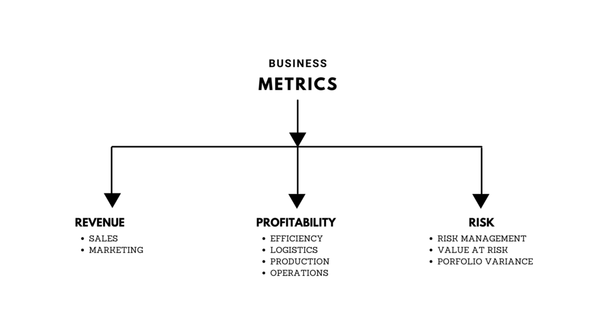

Be The Unicorn Business Analyst
What are Metrics and How to choose one?
Understanding and identifying relevant business metrics.
Technology is constantly evolving, but the technology of 2022 is still a mystery to many. There are a few trends that we can expect to see in the end of 2022. Artificial Intelligence, Robotics and other form of Automation will be a major part of the future and will play an important role in how businesses operate and interact with their customers. Advances in technology will continue to occur and will transform the way business is done. In 2022, we can expect to see intelligence being embedded into everyday objects, interactive displays showing more real-time data than ever before.
A Business Analyst
A Business Analyst is a person who helps businesses to analyze their processes, products, services, and systems to improve current processes and make profitable decisions through insights and data analysis. A Business analyst also helps organizations to document business processes by assessing the business model and its integration with technology.
Some people think that the role of Business Analyst is to make money for the organization, which may not be true in direct context. But indirectly, the action and decision taken by Business Analysts do leave an impact on the financial prospects of the organization.
The well-known expression, “if you can’t measure it, you can’t improve it” is anything but trifling. A change in business process managed can only become great and valuable if quality and performance are effectively measured. How do a Business Analyst measure process’s performance? How do a Business Analyst map a process’s performance to business success?
Business Metrices
A Business Metric is a quantifiable measure businesses use to track, monitor and assess the success or failure of various business processes, or we can say that; Business Metrics are used to drive improvements and help businesses focus their people and resources on what’s important.
Both of them are true, for the least we can tell that; Business Metrices are numbers that can impact when we change our business process. The main goal of measuring business metrics is to track cost management, but the overall point of employing them is to communicate a company’s progression toward certain long- and short-term objectives.
For example; you are running a retail clothing store rooted in the state of Dallas, Texas. Where we have a 8.25% sales tax, the sales tax is not a metric. There’s nothing that we can do to change it. On the Other hand, you are running a online shopping site with it; the percentage of people who viewed your ad on a particular website. Then used it as call to action to your homepage. Can change every time the ad contents change. Or when the time of day changes, where we run the ad, on what websites it appears etc. The people who viewed your ads, visited your website through these ads…, all these are quantitative and can drive insights on your process.
Overall, metrics should reflect and support the various strategies for all aspects of the organization, like marketing, customer acquisition, service offerings, etc. Metrics indicate the priorities of the company and provide a window on performance, ethos and ambition.
The world appears to be flooded with an ocean of data, but much of it not so useful.
The same goes with the business metric’s too, flooded with a lot data. To define a metric is similar to that of finding a jewel in the deep ocean - if you have to spend too much time finding it then you’ll sink. Employees need to understand the metrics, how they can influence it and what is expected of them. Like Metrics, there are Key Performance Indicators (KPIs); a measurable quantitative. Lets keep KPIs for another day.
To make the most use of business metrices, To be the unicorn business analyst, you must be familiar and able to know, what and when we business metrics are used. So here, I’m going to get you know about some of them with suitable scenario cases. Business Metrics can be broadly classified into - Revenue, Profitability and Risk.

Revenue Metrics
These metrics are outward facing and always refer to sales and marketing - means directly to your revenue. They tells us about how well or badly the company is marketing the products and sales are done.
If the Company’s VP of the salesforce, wants to know how well many units of each commodity is sold over a given time interval or